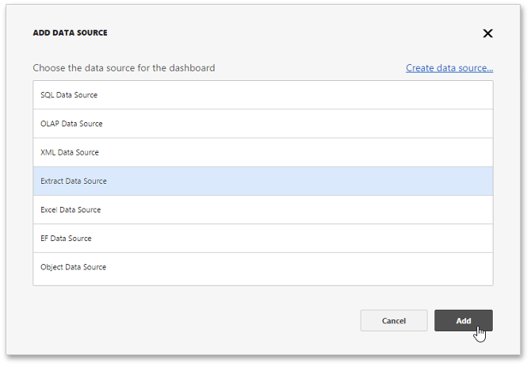
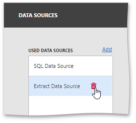

Manage Data Sources
The Web Dashboard allows you to manage the dashboard's data sources. To do this, open the dashboard menu and go to the Data Sources page. Here you can add new data sources to the current dashboard or remove the existing data source.
To add a new data source, click Add next to the Used Data Sources list.

The Add Data Source window is invoked. Here you can perform the following actions.
- Click Create to invoke the Dashboard Data Source Wizard where you can create a new data source based on the predefined data connection.
- Select the existing data source from the list.

After that, click Add to add the selected data source to the dashboard data sources.
The added data source will be displayed in the Used Data Sources section. You can use the added data sources to change the data source of the created dashboard items.
To remove the existing data source from the dashboard data sources, click Remove ( the  icon).
icon).
